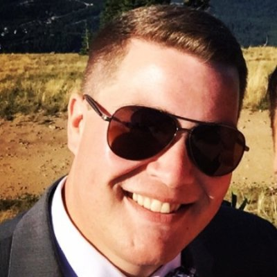

<div class="wrapper">
  <div class="shading_filter">

  <app-language-bar></app-language-bar>
  <app-navigation-bar></app-navigation-bar>


<!-- <p>ABOUT ME!!</p> -->

<div class="about_me">
  <!-- <p>ABOUT ME!!</p> -->
  
  <div class="description">
    <h1 *ngIf="language=='english'">Hello!</h1>
    <h1 *ngIf="language=='espanol'">¡Hola!</h1>
    <p *ngIf="language=='english'">
      Hello! I’m Nick. I am a web developer, husband, traveler, and life-long learner.
      I’m originally from the Puget Sound area, and after finishing college in Idaho and
      spending a semester studying abroad in the Spanish Basque Country, I now live and work in
      Spokane, Washington with my wife. I believe, passionately, that technology can be
      used as a tool to increase personal freedom and individual autonomy, enriching our
      lives in the process. If you need help with a website, or just want to get to know
      me better, please feel free to
      <a [routerLink]="['','contact-me']">reach out</a>.
    </p>
    <p *ngIf="language=='espanol'">
      Soy Nick. Soy desarrollador web, esposo, viajero, y estoy siempre aprendiendo.
      Originalmente, soy del estado de Washington, y después de terminar la universidad
      en Idaho y estudiar por un semestre en el Pais Vasco Español, vivo y trabajo en
      Spokane, Washington con mi esposa. Creo, apasionadamente, que la tecnología puede
      ser usado como herramienta para  aumentar la libertad personal y la autonomía del
      individuo, enriqueciendo todas nuestras vidas.   Si necesitas ayuda con un sitio
      web, o si quieres conocerme mejor, por favor, no dudes en
      <a [routerLink]="['','contact-me']">contactarme</a>.
    </p>
  </div>

  <!--  -->
</div>


  </div>
</div>
